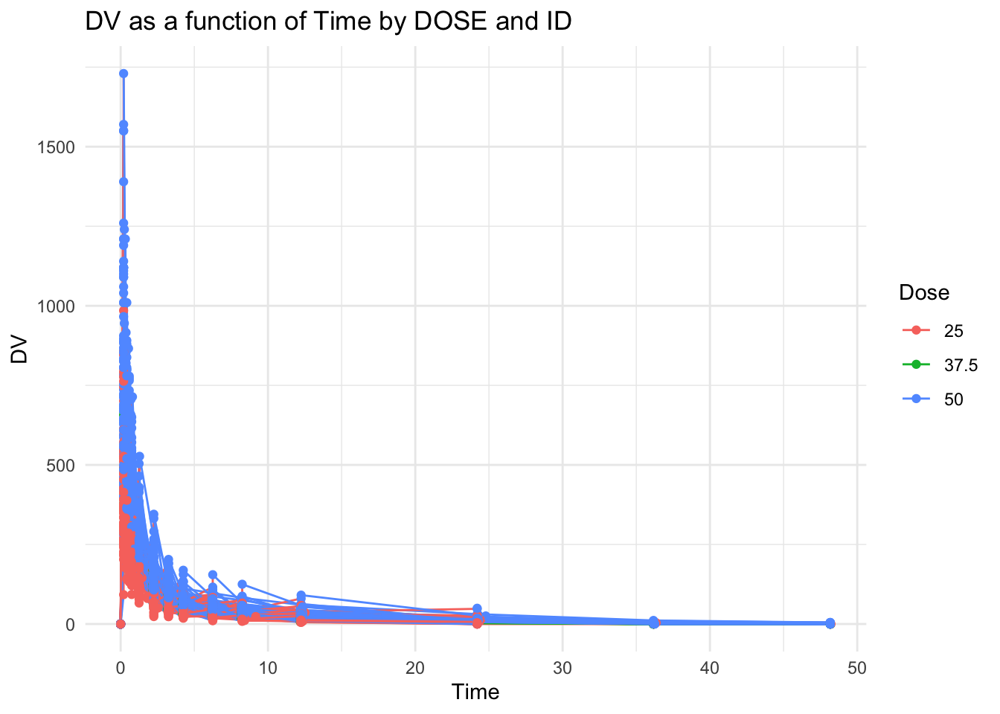
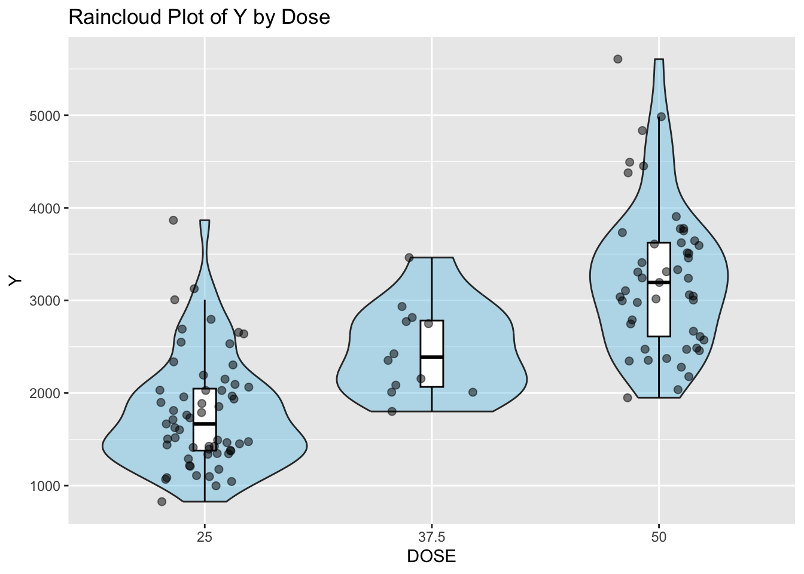
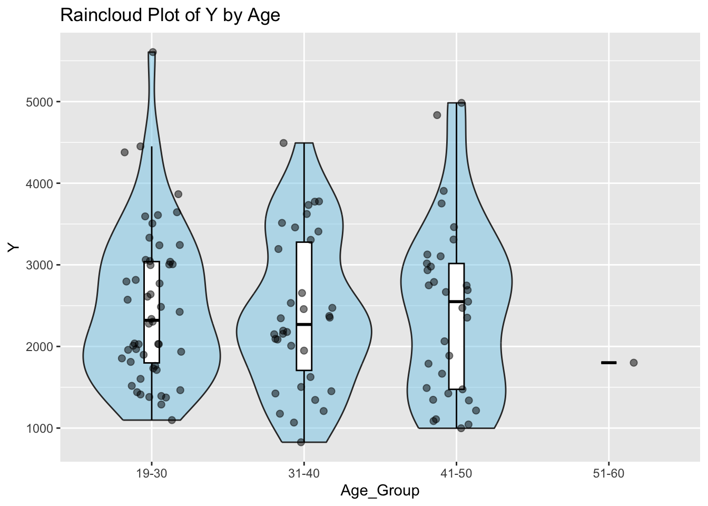

suppressMessages({
library(ggplot2)
library(dplyr)
library(skimr)
library(shiny)
library(DT)
library(here)
library(rsconnect)
library(tidymodels)
library(yardstick)
library(MASS)
})fitting-exercise
`
Load dataset
dataset found at https://github.com/metrumresearchgroup/BayesPBPK-tutorial.git
file_path_mav = here("fitting-exercise", "data", "Mavoglurant_A2121_nmpk.csv")
mav = read.csv(file_path_mav)DV is the outcome variable
Plot graph DV as a function of Time by DOSE and ID
# Create a ggplot object using the 'mav' data
ggplot(mav, aes(x = TIME, y = DV, group = ID, color = as.factor(DOSE))) +
geom_line() +
geom_point() +
theme_minimal() +
labs(title = "DV as a function of Time by DOSE and ID",
x = "Time",
y = "DV",
color = "Dose")
Showing all doses on one graph make it difficult to read
Try creating 1 plot for each dose
ggplot(mav, aes(x = TIME, y = DV, group = ID, color = as.factor(DOSE))) +
geom_line() +
geom_point() +
theme_minimal() +
labs(title = "DV as a function of Time by DOSE and ID",
x = "Time",
y = "DV",
color = "Dose") +
facet_grid(~DOSE, scales = "fixed") # Adjusted scales to "fixed" so that they share the same y axis scaleKeep only records where OCC=1
mav_occ_1 = mav %>%
filter(OCC == 1)
#check to make sure filter worked as expected
unique(mav_occ_1$OCC)[1] 1Filter and join the dataset
One data frame where observations where TIME = 0 are excluded, then sum DV for each ID to create a new variable, Y
One data frame that keeps only records where TIME == 0
Rationale: Initial measurements (TIME == 0) often represent baseline or pre-treatment values. Excluding these when summing DV allows for the calculation of total change or exposure post-baseline, which can be critical for assessing the effect or impact of an intervention.
# exclude observations where TIME = 0
# then sum DV for each ID to create new variable, Y
mav_dv_sum = mav_occ_1 %>%
filter(TIME != 0) %>%
group_by(ID) %>%
summarize(Y = sum(DV, na.rm = TRUE))
#check dimension
dim(mav_dv_sum)[1] 120 2# Keep only records where TIME == 0
mav_time0 = mav_occ_1 %>%
filter(TIME == 0) %>%
distinct(ID, .keep_all = TRUE)
#join the two data frames
mav_joined = left_join(mav_dv_sum, mav_time0, by = "ID")
#Check the dimension to ensure it is 120x18
dim(mav_joined)[1] 120 18Convert SEX, RACE, and DOSE to factor variables and keep the variables Y, DOSE, AGE, SEX, RACE, WT, HT
#This code transforms SEX, RACE, and DOSE into categorical variables for analysis and selects a specific set of variables, streamlining the dataset for focused statistical modeling or data exploration involving these key demographic and treatment attributes.
library(dplyr)
mav_clean <- mav_joined %>%
mutate(SEX = as.factor(SEX), RACE = as.factor(RACE), DOSE = as.factor(DOSE)) %>%
dplyr::select(Y, DOSE, AGE, SEX, RACE, WT, HT)
# Checking the dimensions
dim(mav_clean)[1] 120 7Create BMI variable and a categorical variable for age
Convert them to factors
BMI = weight in kilograms / (height in meters)^2
#Calculate BMI and assign categories based on value
mav_clean <- mav_clean %>%
mutate(
bmi = WT / (HT^2),
BMI_Category = case_when(
bmi < 18.5 ~ "Underweight",
bmi >= 18.5 & bmi < 25 ~ "Normal",
bmi >= 25 & bmi < 30 ~ "Overweight",
bmi >= 30 ~ "Obese",
TRUE ~ "Unknown" # Handles any missing or NA values
)
) %>%
mutate(BMI_Category = factor(BMI_Category)) #convert to factor
#Create categorical age variable
mav_clean <- mav_clean %>%
mutate(Age_Group = cut(AGE,
breaks = c(-Inf, 18, 30, 40, 50, 60, Inf),
labels = c("<=18", "19-30", "31-40", "41-50", "51-60", ">60"),
right = FALSE)) %>%
mutate(Age_Group = factor(Age_Group)) #convert to factor
#examine structure
str(mav_clean)tibble [120 × 10] (S3: tbl_df/tbl/data.frame)
$ Y : num [1:120] 2691 2639 2150 1789 3126 ...
$ DOSE : Factor w/ 3 levels "25","37.5","50": 1 1 1 1 1 1 1 1 1 1 ...
$ AGE : int [1:120] 42 24 31 46 41 27 23 20 23 28 ...
$ SEX : Factor w/ 2 levels "1","2": 1 1 1 2 2 1 1 1 1 1 ...
$ RACE : Factor w/ 4 levels "1","2","7","88": 2 2 1 1 2 2 1 4 2 1 ...
$ WT : num [1:120] 94.3 80.4 71.8 77.4 64.3 ...
$ HT : num [1:120] 1.77 1.76 1.81 1.65 1.56 ...
$ bmi : num [1:120] 30.1 26 21.9 28.4 26.4 ...
$ BMI_Category: Factor w/ 3 levels "Normal","Obese",..: 2 3 1 3 3 1 3 1 1 2 ...
$ Age_Group : Factor w/ 4 levels "19-30","31-40",..: 3 1 2 3 3 1 1 1 1 1 ...Create tables
Calculatec summary statistics (number of observations, mean, median, minimum, and maximum of variable Y) for different groups in the dataset mav_clean, based on SEX, BMI_Category, and Age_Group
Display these values in sortable tables
# Compute summary statistics for each factor variable
summary_sex <- mav_clean %>%
group_by(SEX) %>%
summarize(
N = n(),
Mean_Y = mean(Y, na.rm = TRUE),
Median_Y = median(Y, na.rm = TRUE),
Min_Y = min(Y, na.rm = TRUE),
Max_Y = max(Y, na.rm = TRUE),
.groups = 'drop'
) %>%
mutate(across(c(Mean_Y, Median_Y, Min_Y, Max_Y), round, 2))Warning: There was 1 warning in `mutate()`.
ℹ In argument: `across(c(Mean_Y, Median_Y, Min_Y, Max_Y), round, 2)`.
Caused by warning:
! The `...` argument of `across()` is deprecated as of dplyr 1.1.0.
Supply arguments directly to `.fns` through an anonymous function instead.
# Previously
across(a:b, mean, na.rm = TRUE)
# Now
across(a:b, \(x) mean(x, na.rm = TRUE))summary_BMI <- mav_clean %>%
group_by(BMI_Category) %>%
summarize(
N = n(),
Mean_Y = mean(Y, na.rm = TRUE),
Median_Y = median(Y, na.rm = TRUE),
Min_Y = min(Y, na.rm = TRUE),
Max_Y = max(Y, na.rm = TRUE),
.groups = 'drop'
) %>%
mutate(across(c(Mean_Y, Median_Y, Min_Y, Max_Y), round, 2))
summary_age <- mav_clean %>%
group_by(Age_Group) %>%
summarize(
N = n(),
Mean_Y = mean(Y, na.rm = TRUE),
Median_Y = median(Y, na.rm = TRUE),
Min_Y = min(Y, na.rm = TRUE),
Max_Y = max(Y, na.rm = TRUE),
.groups = 'drop'
) %>%
mutate(across(c(Mean_Y, Median_Y, Min_Y, Max_Y), round, 2))
# Display the tables
datatable(summary_sex, options = list(pageLength = 5), caption = 'Summary Statistics of Y by SEX')datatable(summary_BMI, options = list(pageLength = 5), caption = 'Summary Statistics of Y by BMI')datatable(summary_age, options = list(pageLength = 5), caption = 'Summary Statistics of Y by Age')Computes summary statistics (count, mean, median, minimum, and maximum) for variable Y, grouped by Age_Group and BMI_Category from the mav_clean dataset, and then displays the results in an sortable table
# Compute summary statistics for Y, stratified by both SEX and RACE
summary_stats_group <- mav_clean %>%
group_by(Age_Group, BMI_Category) %>%
summarize(
N = n(),
Mean_Y = mean(Y, na.rm = TRUE),
Median_Y = median(Y, na.rm = TRUE),
Min_Y = min(Y, na.rm = TRUE),
Max_Y = max(Y, na.rm = TRUE),
.groups = 'drop'
) %>%
mutate(across(c(Mean_Y, Median_Y, Min_Y, Max_Y), round, 2))
# Display the table with DT::datatable for interactivity
datatable(summary_stats_group, options = list(pageLength = 10),
caption = 'Summary Statistics of Y by Age and BMI Status')This R code reorders the levels of the factor variable BMI_Category in the dataset mav_clean and then creates four different plots: a raincloud plot of Y by BMI_Category, a combines scatter and contour plot of Y by Weight, a raincloud plot of Y by DOSE, and a raincloud plot of Y by age category using the ggplot2 package in R
# Reorder the levels of BMI_Category
mav_clean$BMI_Category <- factor(mav_clean$BMI_Category,
levels = c("Normal", "Overweight", "Obese"))
ggplot(mav_clean, aes(x = BMI_Category, y = Y)) +
geom_violin(fill = "skyblue", alpha = 0.5) + # Add violin plot with semi-transparent fill
geom_boxplot(width = 0.1, fill = "white", color = "black", outlier.shape = NA) + # Add transparent boxplot without outliers
geom_point(position = position_jitter(width = 0.2), alpha = 0.5, size = 2) + # Add jittered points for individual data
labs(x = "BMI", y = "Y", title = "Raincloud Plot of Y by BMI") # Add labels and title
ggplot(mav_clean, aes(x = WT, y = Y)) +
geom_point() +
labs(x = "Weight (kg)", y = "Y", title = "Scatter Plot of Y by Weight")#Combined scatter and contour plot
#a contour plot displays the density of points
#in the form of contour lines, providing a two-dimensional representation of the data density.
ggplot(mav_clean, aes(x = WT, y = Y)) +
stat_density_2d(aes(fill = after_stat(level)), geom = "polygon") + # Create contour polygons
geom_point() + # Add scatter plot
scale_fill_viridis_c() + # Choose a color scale
labs(x = "Weight (kg)", y = "Y", title = "Combined Scatter and Contour Plot of Y by Weight") # Add labels and titleggplot(mav_clean, aes(x = DOSE, y = Y)) +
geom_violin(fill = "skyblue", alpha = 0.5) + # Add violin plot with semi-transparent fill
geom_boxplot(width = 0.1, fill = "white", color = "black", outlier.shape = NA) + # Add transparent boxplot without outliers
geom_point(position = position_jitter(width = 0.2), alpha = 0.5, size = 2) + # Add jittered points for individual data
labs(x = "DOSE", y = "Y", title = "Raincloud Plot of Y by Dose") # Add labels and title
ggplot(mav_clean, aes(x = Age_Group, y = Y)) +
geom_violin(fill = "skyblue", alpha = 0.5) + # Add violin plot with semi-transparent fill
geom_boxplot(width = 0.1, fill = "white", color = "black", outlier.shape = NA) + # Add transparent boxplot without outliers
geom_point(position = position_jitter(width = 0.2), alpha = 0.5, size = 2) + # Add jittered points for individual data
labs(x = "Age_Group", y = "Y", title = "Raincloud Plot of Y by Age") # Add labels and titleWarning: Groups with fewer than two data points have been dropped.
Create a grid of scatterplots for each pair of variables in subset_data (Y, bmi) and (HT, bmi), along with histograms for each variable on the diagonal and correlation coefficients in the upper triangle.
Weight and BMI are directly related. Using this as an example to show highly correlated pair
# Load the GGally library for pair plot visualization
library(GGally)Registered S3 method overwritten by 'GGally':
method from
+.gg ggplot2# Subset the dataset to include only the variables Y and BMI
subset_Ybmi<- mav_clean[, c("Y", "bmi")]
# Using the pairs() function to create a matrix of scatterplots for Y and BMI
pairs(subset_Ybmi)
# Using the ggpairs() function to create a grid of scatterplots, histograms, and correlation coefficients for Y and BMI
ggpairs(subset_Ybmi)# Subset the dataset to include only the variables weight and BMI
subset_dataWTbmi <- mav_clean[, c("WT", "bmi")]
# Using the pairs() function to create a matrix of scatterplots for weight and BMI
pairs(subset_dataWTbmi)# Using the ggpairs() function to create a grid of scatterplots, histograms, and correlation coefficients for weight and BMI
ggpairs(subset_dataWTbmi)The BMI to Y shows a Corr. of -.0153. This suggests that there is weak inverse relationship between the two variables.
Model fitting
Fit a linear model to the continuous outcome (Y) using the main predictor of interest, DOSE
Fit a linear model to the continuous outcome (Y) using all predictors
Preprocess data
# Preprocess your data: convert 'DOSE' and 'BMI_Category' to factors
mav_clean <- mav_clean %>%
mutate(
DOSE = as.factor(DOSE), # Convert DOSE to a factor
BMI_Category = factor(BMI_Category, levels = c("Normal", "Overweight", "Obese")) # Ensure BMI_Category has ordered levels
)The code defines a linear model specification using the ‘lm’ engine for regression analysis and prepares a 5-fold cross-validation with stratification by ‘Y’ to ensure balanced splits
Utilizing a 5-fold cross-validation with stratification by ‘Y’ helps ensure balanced splits within each fold, which is crucial for maintaining the representativeness of each subset during model evaluation, especially in the presence of class imbalance or uneven distribution of the target variable ‘Y’.
# Define the linear model specification using the 'lm' engine
linear_spec <- linear_reg() %>%
set_engine("lm") %>%
set_mode("regression")
# Prepare a 5-fold cross-validation, stratifying by 'Y' to ensure balanced splits
cv_folds <- vfold_cv(mav_clean, v = 5, strata = Y)The code creates a workflow for a linear regression model using ‘DOSE’ as the predictor variable, fits the model across cross-validation folds, and collects evaluation metrics including Root Mean Squared Error (RMSE) and R-squared
# Create a workflow for the model using only DOSE as the predictor
workflow_dose <- workflow() %>%
add_formula(Y ~ DOSE) %>% # Define the model formula with DOSE
add_model(linear_spec) # Add the linear model specification
# Fit the model across the cross-validation folds and collect evaluation metrics (RMSE and R-squared)
results_dose <- fit_resamples(
workflow_dose,
cv_folds,
metrics = metric_set(rmse, rsq)
)This code creates a workflow for a linear regression model including all predictors (DOSE, AGE, and BMI_Category), fits the model across cross-validation folds, and collects evaluation metrics such as Root Mean Squared Error (RMSE) and R-squared.
# Workflow for the model including all predictors (DOSE, AGE, BMI_Category)
workflow_all <- workflow() %>%
add_formula(Y ~ DOSE + AGE + BMI_Category) %>% # Include all predictors in the formula
add_model(linear_spec) # Add the same linear model specification
# Fit this comprehensive model across the cross-validation folds and collect metrics
results_all <- fit_resamples(
workflow_all,
cv_folds,
metrics = metric_set(rmse, rsq)
)This series of steps allows for the comparison of evaluation metrics between the model with only ‘DOSE’ as the predictor and the model with all predictors (‘DOSE’, ‘AGE’, and ‘BMI_Category’). Additionally, it provides the range of values for the ‘Y’ variable in the dataset.
# Step 1: Collect metrics for the model with DOSE as the predictor
metrics_dose <- collect_metrics(results_dose)
# Step 2: Collect metrics for the model with all predictors
metrics_all <- collect_metrics(results_all)
# Step 3: Add a model identifier column to the metrics data frames AFTER collecting metrics
metrics_dose$model <- "DOSE Predictor"
metrics_all$model <- "All Predictors"
# Step 4: Combine metrics into a single data frame for comparison
combined_metrics <- bind_rows(metrics_dose, metrics_all)
# Step 5: Reorder the columns so that 'model' is the first column
reordered_metrics <- combined_metrics %>%
dplyr::select(model, .metric, .estimator, mean, n, std_err, .config)
# Step 6: Print the reordered metrics
print(reordered_metrics)# A tibble: 4 × 7
model .metric .estimator mean n std_err .config
<chr> <chr> <chr> <dbl> <int> <dbl> <chr>
1 DOSE Predictor rmse standard 664. 5 55.3 Preprocessor1_Model1
2 DOSE Predictor rsq standard 0.537 5 0.0514 Preprocessor1_Model1
3 All Predictors rmse standard 656. 5 55.0 Preprocessor1_Model1
4 All Predictors rsq standard 0.556 5 0.0539 Preprocessor1_Model1# Step 7: Print the range of 'Y' from the 'mav_clean' dataset
# Assuming 'mav_clean' is your dataset and it contains the variable 'Y'
y_range <- range(mav_clean$Y, na.rm = TRUE)
# Step 8: Print the range
print(y_range)[1] 826.43 5606.58Comparative Proportion: The error is a moderate proportion of the range (5606.58 - 826.43 = 4780.15). Specifically, it’s about 14% of the total range (666.90 / 4780.15 ≈ 0.14), suggesting that, on average, the model’s predictions might deviate from the actual values by around 14% of the total variability in Y.
Fit a logistic model to the categorical/binary outcome (SEX) using the main predictor of interest, which we’ll again assume here to be DOSE
Fit a logistic model to SEX using all predictors.
For both models, compute accuracy and ROC-AUC and print them
P(SEX = 1 | DOSE) = 1 / (1 + exp(-(intercept + coefficient * DOSE))
# Ensure SEX is a factor and DOSE is treated as a factor for logistic regression analysis
mav_clean_prepared <- mav_clean %>%
mutate(
SEX = as.factor(SEX), # Convert SEX to a factor if it isn't already
DOSE = as.factor(DOSE) # Ensure DOSE is treated as a factor
)
# Specify a logistic regression model using glm (Generalized Linear Model) as the engine
logistic_spec_dose <- logistic_reg() %>%
set_engine("glm") %>%
set_mode("classification") # Set mode to classification for the binary outcome
# Prepare a 5-fold cross-validation object, stratifying by SEX to ensure balanced folds
cv_folds_sex <- vfold_cv(mav_clean_prepared, v = 5, strata = SEX)
# Create a workflow combining the logistic model specification with the SEX ~ DOSE formula
workflow_sex_dose <- workflow() %>%
add_formula(SEX ~ DOSE) %>% # Predicting SEX based on DOSE
add_model(logistic_spec_dose) # Add the logistic regression specification
# Fit the model across the cross-validation folds and calculate metrics
results_sex_dose_cv <- fit_resamples(
workflow_sex_dose,
cv_folds_sex,
metrics = metric_set(roc_auc, accuracy) # Focus on ROC AUC and accuracy for evaluation
)
# Collect and summarize the metrics from cross-validation
metrics_sex_dose <- collect_metrics(results_sex_dose_cv)
# Print the summarized metrics to assess model performance
print(metrics_sex_dose)# A tibble: 2 × 6
.metric .estimator mean n std_err .config
<chr> <chr> <dbl> <int> <dbl> <chr>
1 accuracy binary 0.867 5 0.00681 Preprocessor1_Model1
2 roc_auc binary 0.563 5 0.0548 Preprocessor1_Model1Accuracy
Metric: Accuracy measures the proportion of true results (both true positives and true negatives) among the total number of cases examined. It’s a straightforward indicator of how often the model predicts the correct category.
Value: The mean accuracy across the 5 cross-validation folds is approximately 86.69%.
Interpretation: This suggests that, on average, the model correctly predicts the SEX category about 86.69% of the time across the different subsets of your data. A high accuracy indicates the model is generally effective at classifying the instances according to SEX.
ROC AUC (Area Under the Receiver Operating Characteristic Curve)
Metric: ROC AUC evaluates the model’s ability to discriminate between the classes at various threshold settings. The AUC (Area Under the Curve) ranges from 0 to 1, where 1 indicates perfect discrimination and 0.5 indicates no discrimination (equivalent to random guessing). Value: The mean ROC AUC across the 5 folds is approximately 0.553. Interpretation: This value is slightly above 0.5, indicating the model has a very limited ability to distinguish between the SEX categories beyond random chance. The ROC AUC being close to 0.5 suggests that, while the model is accurate in many of its predictions, this might be attributed to the distribution of classes in the dataset rather than the model’s discriminative power.
P(SEX = 1 | DOSE, AGE, BMI_Category) = 1 / (1 + exp(-(intercept + coefficient_DOSE * DOSE + coefficient_AGE * AGE + coefficient_BMI_Category * BMI_Category)))
# Preprocess the dataset: converting predictors to their appropriate formats
mav_clean_logistic_all <- mav_clean %>%
mutate(
BMI_Category = as.factor(BMI_Category), # Ensure BMI_Category is a factor
DOSE = as.factor(DOSE), # Ensure DOSE is a factor
AGE = as.numeric(AGE) # Ensure AGE is numeric
)
# Specify a logistic regression model using glm as the computational engine
logistic_spec_all <- logistic_reg() %>%
set_engine("glm") %>%
set_mode("classification")
# Prepare a 5-fold cross-validation, ensuring a balanced representation of SEX across folds
cv_folds_sex_all <- vfold_cv(mav_clean_logistic_all, v = 5, strata = SEX)
# Create a workflow that encapsulates the model specification and formula
workflow_sex_all <- workflow() %>%
add_formula(SEX ~ BMI_Category + AGE + DOSE) %>% # Use all predictors in the model formula
add_model(logistic_spec_all) # Add the logistic regression model specification
# Fit the model across the cross-validation folds and evaluate
results_sex_all_cv <- fit_resamples(
workflow_sex_all,
cv_folds_sex_all,
metrics = metric_set(roc_auc, accuracy) # Focus on ROC AUC and accuracy for evaluation
)
# Collect metrics from the cross-validation results
metrics_sex_all <- collect_metrics(results_sex_all_cv)
# Print the summarized metrics to understand model performance
print(metrics_sex_all)# A tibble: 2 × 6
.metric .estimator mean n std_err .config
<chr> <chr> <dbl> <int> <dbl> <chr>
1 accuracy binary 0.834 5 0.0181 Preprocessor1_Model1
2 roc_auc binary 0.779 5 0.0577 Preprocessor1_Model1First Model (DOSE as the Predictor)
Accuracy: The mean accuracy is approximately 86.69%, indicating a high overall rate of correctly predicting SEX.
ROC AUC: The mean ROC AUC is approximately 0.553, suggesting the model’s ability to discriminate between the classes is only slightly better than random guessing.
Second Model (All Predictors: BMI_Category, AGE, DOSE)
Accuracy: The mean accuracy slightly decreases to approximately 84.26%. This indicates a slight reduction in the overall rate of correct predictions compared to the first model.
ROC AUC: The mean ROC AUC improves to approximately 0.627, indicating enhanced discriminative ability between the classes compared to the first model.
Interpretation
Accuracy vs. ROC AUC: While the first model achieves higher accuracy, its ROC AUC value is lower, suggesting it’s not as effective at distinguishing between the classes across different thresholds. The second model, despite a slight drop in accuracy, shows a notable improvement in ROC AUC, indicating better performance in class discrimination.
Model Comparison: The increase in ROC AUC for the second model suggests that including additional predictors (BMI_Category and AGE alongside DOSE) contributes to a more nuanced understanding and prediction of SEX, beyond what is achievable with DOSE alone. This indicates the importance of considering multiple factors in predictive modeling, especially for complex outcomes.
k-nearest neighbors (KNN) regression model
The model is trained and evaluated to predict the outcome variable ‘Y’ based on the predictor variable ‘DOSE’.
This process involves splitting the dataset into training and testing sets, converting the ‘DOSE’ variable to a factor, specifying the KNN model, fitting the model on the training data, making predictions on the testing set, calculating evaluation metrics (Root Mean Squared Error and R-squared), and printing the evaluation metrics for model assessment and comparison.
library(kknn)
# Splitting the data
set.seed(123) # Ensure reproducibility
mav_data_split <- initial_split(mav_clean, prop = 0.75) # 75% training, 25% testing
mav_train <- training(mav_data_split) # Training data
mav_test <- testing(mav_data_split) # Testing data
mav_train <- mav_train %>%
mutate(DOSE = as.factor(DOSE))
mav_test <- mav_test %>%
mutate(DOSE = as.factor(DOSE))
# KNN model specification
knn_spec <- nearest_neighbor(neighbors = 5) %>%
set_engine("kknn") %>%
set_mode("regression")
# Creating the workflow
knn_workflow <- workflow() %>%
add_formula(Y ~ DOSE) %>%
add_model(knn_spec)
# Fitting the model on training data
knn_fit <- knn_workflow %>%
fit(data = mav_train)
# Making predictions on the testing set
knn_predictions <- predict(knn_fit, new_data = mav_test) %>%
bind_cols(mav_test)
# Calculate RMSE and R-squared
knn_metrics <- knn_predictions %>%
metrics(truth = Y, estimate = .pred) %>%
filter(.metric %in% c("rmse", "rsq"))
# Print the evaluation metrics
print(knn_metrics)# A tibble: 2 × 3
.metric .estimator .estimate
<chr> <chr> <dbl>
1 rmse standard 566.
2 rsq standard 0.648